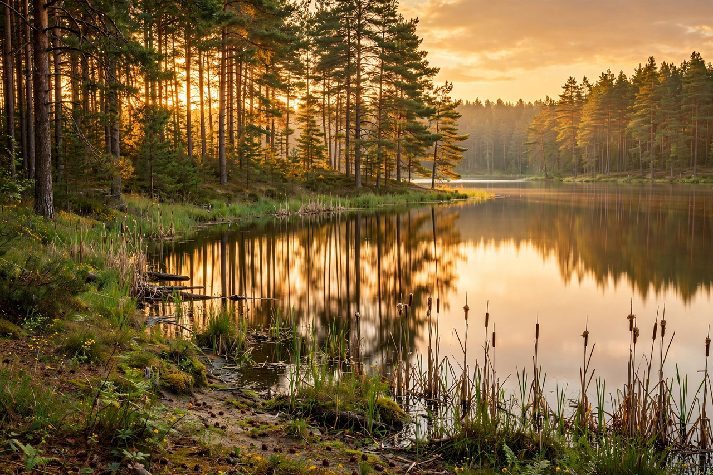

| Brandenburg | |
|---|---|
 | |
| Country | Germany |
| Capital | Potsdam |
| Largest city | Potsdam |
| Area | 29,654 km² |
| Population | ~2.5 million |
| Founded | Margraviate of Brandenburg, 1157; modern state 1990 |
Brandenburg (German: [ˈbʁandn̩bʊʁk]; Lower Sorbian: Bramborska) is a state in the north-east of Germany bordering Poland and the states of Berlin, Mecklenburg-Vorpommern, Lower Saxony, Saxony-Anhalt, and Saxony. It surrounds the national capital Berlin, with which it forms the Berlin/Brandenburg Metropolitan Region. Brandenburg's capital and largest city is Potsdam.
The Margraviate of Brandenburg, founded in 1157 by Albert the Bear after his conquest of Brandenburg an der Havel from the Slavic Hevelli, became one of the seven electorates of the Holy Roman Empire. In 1415 the margraviate passed to the House of Hohenzollern, who ruled it for five centuries. United with the Duchy of Prussia in 1618, Brandenburg formed the core of Brandenburg-Prussia and later the Kingdom of Prussia, whose rise made it the nucleus of the German Empire of 1871. After 1945 the territory east of the Oder–Neisse line was transferred to Poland and the USSR, and Brandenburg became a state of East Germany (dissolved into districts in 1952), re-emerging as a federal state upon German reunification in 1990.
Brandenburg is Germany's fifth-largest state and its driest and sunniest large region, known for its many lakes (around 3,000 natural lakes), pine forests, and the Spreewald biosphere reserve, a network of waterways southeast of Berlin. Protected areas include Lower Oder Valley National Park. Major towns besides Potsdam include Cottbus, Brandenburg an der Havel, and Frankfurt (Oder).
See also: Margraviate of Brandenburg · Potsdam · Prussia